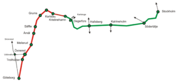

Nordens första tåghack nåde till sist sin slutdestination efter ett otroligt kul event! Tack till alla som var med och gjorde evente möjligt och tänkte ut smarta lösningar för att förbättra kollektivtrafiken! Det var mycket problem på vägen innan Trainhack 2016 faktisikt blev av.
På onsdags kvällen dagen innan resan från Göteborg så var det mingel och information om öppna data och API er på Creative Loop. Det blev en trevlig stund med både mat och dryck.
Samtidigt så byggde Oxyfi in utrustnhing för intentet ombord i Blå Tågets konferansvagn (S1) anternner på taket, accesspunkter och allt annat som behövs för en snabb uppkoppling.
Lagens medlemmar hittade varandra både före eventet på slack kanalen och på träffen dagen innan och några träffades ombord på tåget. Trainhackteamet stöttade med att få alla deltagare att hitta ett lag om de inte redan hade fått ett.

Resan gick från Göteborg via Kristinehamn och Stockholm till Uppsala:
När vi var framme i Uppsala var det mat och hackande och sedan presentationer och prisutdelning.
Du kan läsa mer i NyTeknik om ”Tåghack” skapade nya trafikappar, i Dagens Industri där de beskriver eventet som Här går it-utvecklingen på räls, om hur Microsoft klev på Trainhack tåget och Microsoft med på Trainhack tåget. Du kan också lyssna också på Buzzfrogs podcast: Dev.Cast 154 – Train Hack 2016
Se presentationerna som spelades in av Microsft representatner, eller läs med på Trafiklabs blogg under Trafiklab om årets pristagare.
Försa pris tilldelases till Train Alerts för bästa projekt och bästa sammarbete, Klimatkollen vann Trafiklabs pris, SJ Appar vann pris för mest nytänkande, Låt oss fixa kollektivtrafiken van pris för mest kollaborativa projekt, Spårinfo vann pris för nyttigaste projektet, Positionsanalys vann pris för bästa Dataanalys, XML-RSS vann pris för den teckigaste lösningen och På Spåret vann pris för den mest underhållande projektet.
Eventet projektledare var Martin Harari Thuresson från 46elks AB, med stöd av alla partners för TH16.
{kind=link}
{kind=link}
{kind=link}